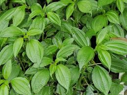

Jungle Survival
TANAMAN BERACUN
Tanaman beracun adalah tanaman yang berbahaya apabila disentuh atau dikonsumsi baik bagi manusia ataupun hewan.
karena efeknya dapat menyebabkan mual, rasa sakit pada permukaan kulit bahkan sampai kematian.

Bagian tumbuhan yang berbahaya biasanya terdapat pada :
1. Duri
2. Bulu
3. Serbuk Kersik
4. Getah
Ciri Ciri tanaman beracun yaitu
1. warnanya mencolok
2. berduri
3. berkersik
4. berbulu
5. memiliki getah kental dengan warna yang bervariasi
6. memiliki aroma yang menyengat
Cara mengindentifikasi tanaman beracun atau tidak
Memastikan tumbuhan beracun dapat dijalankan dengan mencari tahu apakah tumbuhan tersebut beracun ataukah tidak,memiliki bau atau tidak, lalu menggosoknya kekulit apakah mengakibatkan gatal atau tidak meletakan ke bagian yang sensitif yakni bibir selama waktu tetentu apakah gatal atau tidak, panas atau tidak dan apakah hewan menghindari tumbuhan tersebut atau malah memakannya khususnya hewan mamalia.
Khusus untuk jamur, apabila menemukan jamur sebaiknya jangan dimakan diakarenakan sulit untuk membedakan jenis yang bisa dimakan atau tidak, kecuali bagi yang sudah ahli.
Sumber : http://adesahy.blogspot.com/2012/12/tumbuhan-berbahay-dan-beracun.html